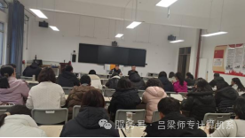
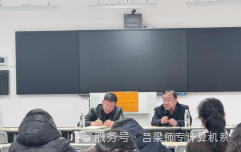

汇众力以行稳，集广益而致远。2024年12月10日下午，计算机系召开了本学期期末教学工作会议，吕梁师范高等专科学校党委副书记、校长马林赴计算机系调研座谈。计算机系负责人秦瑞峰主持座谈会，全体教职员工参会。
会议伊始,秦瑞峰主任就计算机系本学期期末考试工作和下学期课程开设以及教师培训安排做了部署，对系部教学教研、教学管理、学生管理、实习实训等方面的工作进行了总结，并针对下学期系部课程设置，学生基本情况以及教师代课安排等工作进行了规划，他鼓励教师们提前认真备课，不断提高自身素养，以适应系部人才培养的发展和需求。
马林校长在听取了计算机系近期工作的进展情况与安排后，针对学校当前实际，结合师范类转型发展的迫切要求，作出如下强调：
一是要加强学习。作为教师，尤其是计算机专业的教师，一定要加强学习。计算机学科发展迅速，新技术、新工具层出不穷。教师应定期阅读最新的学术论文、技术博客、行业报告等，以了解最新的技术趋势和发展方向。同时他表示，学校会大力支持大家的专业提升和发展，鼓励大家参加专业会议、研讨会和培训班等，与同行交流，了解最新的研究成果和教学经验。
二是提高教学质量。他指出，作为教师，要代好课就要不断深化专业知识，深入学习计算机科学的基础理论和专业知识，确保自己在教学和科研中具备扎实的基础。同时要提升教学方法，探索并实践新的教学理念，以提高学生的学习兴趣和参与度。
最后，马林校长就本年度进一步提高教师待遇，增加奖励绩效的情况进行了说明。他鼓励教师们担起教书育人的重担，多代课，代好课，助力学生成长成才。他坚信，只要全校师生上下同心同德，吕梁师范高等专科学校一定会在教育改革的浪潮中，谱写出属于自己的华丽新篇。此次会议明确了前行的道路，坚定了教师们的信念，并为计算机系全体成员注入了鲜活的能量。我们将齐心协力，并肩前行，致力于推动我校教育事业迈向更高质量的发展阶段，贡献出我们应有的力量。